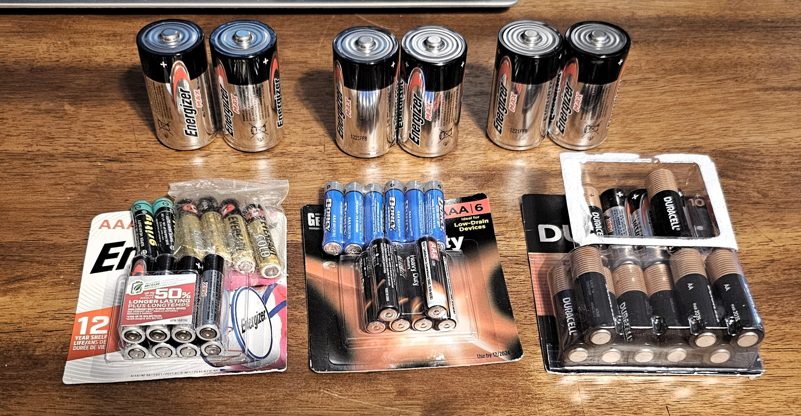

Note that no endorsement is offered to any particular brand of battery here, in case you can't tell from the weird mix.
Getting Started
Let's get started with a replaceable-battery power supply. For these purposes, we won't use rechargeable batteries, for the moment. Instead, we're going to start working with just plain old drugstore batteries.

🔋 Step Zero: Are These Batteries Even Any Good?
Before we even dream of building a creaky power supply, let’s face it: we don't even know if the batteries work. I mean, I do have a voltmeter, but let’s assme we don’t. Let's assume we’re surviving off the land — and the junk drawer.
Here’s how to test batteries with just an LED and a resistor, while sneaking in a little Ohm’s Law.
🔦 LED + Resistor = Instant Battery Tester
To check if a battery has enough voltage left to be useful, we can wire up a very basic circuit:

Ah, so the light isn't lit, so the battery's bad? Not so fast: there's a little math we need to do.
This setup doesn’t tell us the exact voltage, but it gives us something better: a visual indicator under load. If the LED lights up, the battery has enough voltage and current to be worth using. So this this LED isn't lit, does that mean that the battery's bad?
Well, let’s do the math (Ohm’s Law style). Ohm’s Law is: V = I x R, where V is voltage, I is current, and R is resistance. Pretty basic. We can tell whether a battery has any power left by checking the current (I). If we solve this equation for current, it's I = (V_battery - V_forward) / R.
You'll noticed my solved form of Ohm's law has a more complex voltage "mini-equation": (V_battery - V_forward). V_forward represents the Forward voltage of the LED, which is sometimes also called the threshold voltage. That's the voltage it takes get get current to even flow through the LED.
These forward voltages are different for different colors of LEDs. We can use that our advantage if we do it right -- but we'll get to that later. In the meantime, have a look at this chart:

What it takes to light up an LED
Even blue LEDs, which need more voltage, will light dimly with the right resistor. If you’re using just 1.5V (a single AA/D), most LEDs won’t light at all, as you can see from the chart above, because they aren't going above forward voltage. That’s a lesson worth learning.
Let's try some combinations
You need to know the characteristics of your components and then ensure sufficient voltage to drive them (note that I still have a 330-ohm resistor in the circuit -- we'll get to that in a minute). It's clear from the chart above that 1.5 VDC won't drive (turn on) a green LED. But what if we try a red one, which has a lower forward voltage?